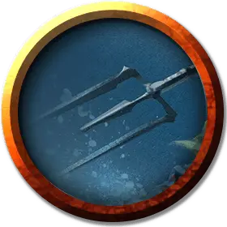

Летающий трезубец
Flying Trident
Маленький Конструкт, без мировоззрения

Класс Доспеха 17 (природный доспех)
Хиты 17 (5к6)
Скорость 0 футов, летая 50 футов (парит)
| мод | спас | ||
|---|---|---|---|
| СИЛ | 12 | +1 | +1 |
| ЛОВ | 15 | +2 | +4 |
| ТЕЛ | 11 | +0 | +0 |
| мод | спас | ||
|---|---|---|---|
| ИНТ | 1 | −5 | −5 |
| МДР | 5 | −3 | −3 |
| ХАР | 1 | −5 | −5 |
Иммунитет к урону психическая энергия, яд
Иммунитет к состояниям очарование, паралич, отравление, ослепление, окаменение, испуг, глухота
Чувства слепое зрение 60 футов (слеп за пределами этого радиуса), пассивное Восприятие 7
Опасность 1/4 (50 опыта)
Бонус мастерства +2
Особенности
Восприимчивость к антимагии. Трезубец недееспособен, пока находится в пределах области преграды магии. Став целью рассеивания магии, трезубец должен преуспеть в спасброске Телосложения Сл спасброска заклинателя, иначе потеряет сознание на 1 минуту.
Обманчивая внешность. Пока трезубец остается без движения, он неотличим от обычного трезубца.
Действия
Трезубец. Рукопашная атака оружием: +3 к попаданию, досягаемость 5 футов, одна цель. Попадание: Колющий урон 5 (1к8 + 1).